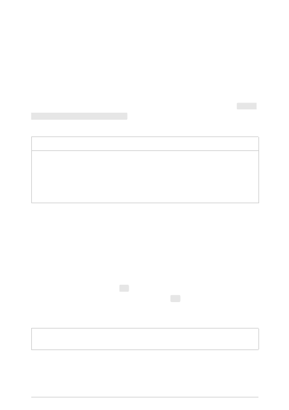

Models can be susceptible to recency bias, which in this context means that information
at the end of the prompt might have more significant influence over the output than
information at the beginning of the prompt. Therefore, it is worth experimenting with
repeating the instructions at the end of the prompt and evaluating the impact on the
generated response.
This refers to including a few words or phrases at the end of the prompt to obtain a
model response that follows the desired form. For example, using a cue such as “Here’s
a bulleted list of key points:\n- ”
can help make sure the output is formatted as a
list of bullet points.
System message
User
Assistant
You are an AI assistant
that helps people find
information. Answer in
as few words as
possible.
John Smith is married to Lucy Smith. They have five
kids, and he works as a software engineer at
Microsoft. What search queries should I do to fact-
check this? ## One possible search query is:
"John Smith
married Lucy
Smith five kids
software
engineer
Microsoft"
In the above prompt, the text One possible search query is: primes the model to produce
a single output. Without this cue the model produces several search queries as output.
Using clear syntax for your prompt—including punctuation, headings, and section
markers—helps communicate intent and often makes outputs easier to parse.
In the example below, separators (--- in this case) have been added between different
sources of information or steps. This allows the use of --- as a stopping condition for
generation. In addition, section headings or special variables are presented in uppercase
to differentiate them.
System
message
User
Assistant
Prime the output
Add clear syntax